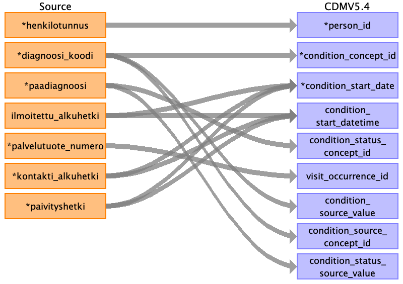

Table name: condition_occurrence
Reading from uranus_diagnoosi
Only include rows for which person_id can be found.

| Destination Field | Source field | Logic | Comment field |
|---|---|---|---|
| condition_occurrence_id | Generated automatically. | ||
| person_id | potilasnumero | Join to the mapping table with the connected field to find person_id. | |
| condition_concept_id | diagnoosi_koodi | Join to ICD10 mapping table with the connected field without a possible "combination character" ('*','&','#','+') at the end to find target_concept_id. If this is not available, then use 0. | |
| condition_start_date | kontakti_alkuhetki luontihetki ilmoitettu_alkuhetki |
Use the first available (in this order) from kontakti_alkuhetki, ilmoitettu_alkuhetki, paivityshetki. If none of these is avalable, then use NULL. | |
| condition_start_datetime | ilmoitettu_alkuhetki kontakti_alkuhetki luontihetki |
Use the first available (in this order) from kontakti_alkuhetki, ilmoitettu_alkuhetki, paivityshetki. If none of these is avalable, then use NULL. | |
| condition_end_date | Use NULL. | ||
| condition_end_datetime | Use NULL. | ||
| condition_type_concept_id | Use standard: 32817 EHR. | ||
| condition_status_concept_id | paadgn | If the connected field = 1, then use 32902 Primary diagnosis, if the connected field = 0, then use 32908 Secondary diagnosis, else use NULL. | |
| stop_reason | Use NULL. | ||
| provider_id | Use NULL. | ||
| visit_occurrence_id | palvelu_numero | Join to the mapping table with the connected field to find target_concept_id. If this is not available, then use 0. | |
| visit_detail_id | Use NULL. | ||
| condition_source_value | diagnoosi_koodi | Use at most the first 50 characters from the connected field. | |
| condition_source_concept_id | diagnoosi_koodi | Join to ICD10 mapping table with the connected field without a possible "combination character" ('*','&','#','+') at the end to find target_concept_id. If this is not available, then use 0. | |
| condition_status_source_value | paadgn | Use the connected field as is. |
Reading from tilannekanta_diagnoosi
Only take rows for which the person exists in PERSON_ID_FOR_ASIAKAS table.

| Destination Field | Source field | Logic | Comment field |
|---|---|---|---|
| condition_occurrence_id | Generated automatically. | ||
| person_id | henkilotunnus | Join to the mapping table with the connected field to find person_id. | |
| condition_concept_id | diagnoosi_koodi | Join to ICD10 mapping table with the connected field without a possible "combination character" ('*','&','#','+') at the end to find target_concept_id. If this is not available, then use 0. | |
| condition_start_date | ilmoitettu_alkuhetki kontakti_alkuhetki paivityshetki |
Use the first available (in this order) from kontakti_alkuhetki, ilmoitettu_alkuhetki, paivityshetki. If none of these is avalable, then use NULL. | |
| condition_start_datetime | ilmoitettu_alkuhetki kontakti_alkuhetki paivityshetki |
Use the first available (in this order) from kontakti_alkuhetki, ilmoitettu_alkuhetki, paivityshetki. If none of these is avalable, then use NULL. | |
| condition_end_date | Use NULL. | ||
| condition_end_datetime | Use NULL. | ||
| condition_type_concept_id | Use standard: 32817 EHR. | ||
| condition_status_concept_id | paadiagnoosi | If the connected field = 1, then use 32902 Primary diagnosis, if the connected field = 0, then use 32908 Secondary diagnosis, else use NULL. | |
| stop_reason | Use NULL. | ||
| provider_id | Use NULL. | ||
| visit_occurrence_id | palvelutuote_numero | Join to the mapping table with the connected field to find target_concept_id. If this is not available, then use 0. | |
| visit_detail_id | Use NULL. | ||
| condition_source_value | diagnoosi_koodi | Use at most the first 50 characters from the connected field. | |
| condition_source_concept_id | diagnoosi_koodi | Join to ICD10 mapping table with the connected field without a possible "combination character" ('*','&','#','+') at the end to find target_concept_id. If this is not available, then use 0. | |
| condition_status_source_value | paadiagnoosi | Use the connected field as is. |